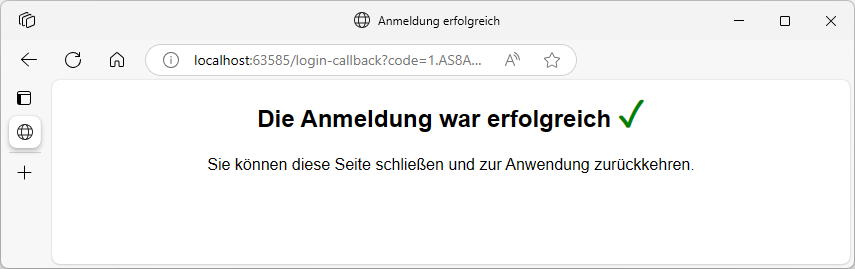
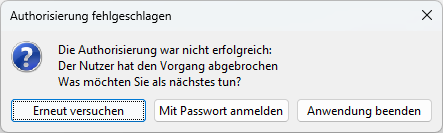

OpenID Connect
Framework Studio Anwendungen unterstützen die Benutzer-Authentifizierung mithilfe von OpenID Connect.
Bei diesem Verfahren wird die eigentliche Authentifizierung über einen entsprechenden Anbieter wie z.B. Microsoft oder Keycloak durchgeführt. Benutzer benötigen kein extra Passwort für die Anmeldung an der Anwendung.
Ablauf einer Authentifizierung
Für den Anwender läuft die Anmeldung folgendermaßen ab:
- Start der Anwendung
- Die Anmelde-Seite des Anbieters wird geöffnet. Dafür wird der Standard-Browser des Betriebssystems verwendet. In der Regel erkennt die Anmelde-Seite eine vorhandene Anmeldung und der Benutzer muss diese nur noch bestätigen. Je nach Anbieter (z.B. KeyCloak) ist ggf. auch gar keine zusätzliche Benutzer-Interaktion mehr erforderlich.
- Die Anwendung startet mit angemeldetem Benutzer. Bei erfolgreicher Anmeldung schickt die Anmelde-Seite Informationen zur Anwendung. Diese verarbeitet die restlichen Schritte und startet im Hintergrund.
- Im Browser wird eine Bestätigungs-Seite angezeigt, welche (technisch bedingt) vom Benutzer geschlossen werden muss. 
Eine detaillierte Beschreibung des Ablaufs finden Sie hier.
Ist eine Authentifizierung nicht möglich, dann zeigt der Java-Client den folgenden Dialog:

Gründe dafür könnten z.B. sein:
- Fehler - die Authentifizierung war nicht erfolgreich
- Abbruch - während dem Anzeigen der Anmelde-Webseite wurde der Abbrechen-Button gedrückt
- Timeout - innerhalb von 5 Minuten erfolgt keine Authentifizierung
Mit dem Button Mit Passwort anmelden wird die OpenID Connect Authentifizierung abgebrochen und die Anwendung startet mit dem herkömmlichen Login-Dialog.
Note
Die Passwort-Anmeldung funktioniert nur, wenn für den Benutzer die Passwort-Authentifizierung aktiv ist.
Einrichtung
Die Konfiguration des Authentication-Service erfolgt im AuthenticationServiceConfigEditor.

Im Abschnitt OpenID Connect Authentication werden alle nötigen Einstellungen vorgenommen.
Es kann genau ein Identity-Provider konfiguriert werden.
Möchte man dem Benutzer eine Auswahl verschiedener Identity-Provider bieten, dann muss z.B. KeyCloak eingesetzt werden. Der Authentication-Service wird mit Keycloak verbunden. Innerhalb von Keycloak können dann weitere Identity-Provider konfiguriert (Stichwort Federation) und die unterschiedlichen Identitäten der Benutzer verbunden werden.

Die Einstellungen können je nach Anbieter variieren. Folgende Identity-Provider wurden getestet:
- KeyCloak
- Microsoft Entra ID
Identity Provider URL
Die Adresse des Identity Providers.
Mit dem Link Test well-known kann geprüft werden, ob die Seite korrekt reagiert.
Es wird die folgende URL im Browser geöffnet: <Identity Provider URL>/.well-known/openid-configuration.
Diese URL liefert in standardisierter Form öffentliche Informationen darüber, wie die Kommunikation mit dem Identity Provider erfolgt.
Der Authentications-Service verwendet dieselbe URL für die Ermittlung der Details des Identity Providers.
Beispiel für die Ausgabe einer funktionierenden Seite:
{
"token_endpoint": "https://login.microsoftonline.com/a17fecad-0a16-459f-af15-e057e29c8836/oauth2/token",
"token_endpoint_auth_methods_supported": ["client_secret_post", "private_key_jwt", "client_secret_basic"],
"jwks_uri": "https://login.microsoftonline.com/common/discovery/keys",
"response_modes_supported": ["query", "fragment", "form_post"],
"subject_types_supported": ["pairwise"],
"id_token_signing_alg_values_supported": ["RS256"],
"response_types_supported": ["code", "id_token", "code id_token", "token id_token","token"],
"scopes_supported": ["openid"],
"issuer": "https://sts.windows.net/a17fecad-0a16-459f-af15-e057e29c8836/",
"microsoft_multi_refresh_token": true,
"authorization_endpoint": "https://login.microsoftonline.com/a17fecad-0a16-459f-af15-e057e29c8836/oauth2/authorize",
"device_authorization_endpoint": "https://login.microsoftonline.com/a17fecad-0a16-459f-af15-e057e29c8836/oauth2/devicecode",
"http_logout_supported": true,
"frontchannel_logout_supported": true,
"end_session_endpoint": "https://login.microsoftonline.com/a17fecad-0a16-459f-af15-e057e29c8836/oauth2/logout",
"claims_supported": ["sub", "iss", "cloud_instance_name", "cloud_instance_host_name", "cloud_graph_host_name", "msgraph_host", "aud", "exp", "iat", "auth_time", "acr", "amr", "nonce", "email", "given_name", "family_name", "nickname"],
"check_session_iframe": "https://login.microsoftonline.com/a17fecad-0a16-459f-af15-e057e29c8836/oauth2/checksession",
"userinfo_endpoint": "https://login.microsoftonline.com/a17fecad-0a16-459f-af15-e057e29c8836/openid/userinfo",
"kerberos_endpoint": "https://login.microsoftonline.com/a17fecad-0a16-459f-af15-e057e29c8836/kerberos",
"tenant_region_scope": "EU",
"cloud_instance_name": "microsoftonline.com",
"cloud_graph_host_name": "graph.windows.net",
"msgraph_host": "graph.microsoft.com",
"rbac_url": "https://pas.windows.net"
}
Client ID
Im Identity Provider muss eine Anwendung registriert werden. Die dabei erzeugte Client ID wird hier eingetragen.
Client Secret
Ein geheimer Schlüssel, der im Identity Provider für die Anwendung erzeugt wird.
Tip
Je nach Anbieter ist ein Client Secret nicht zwingend erforderlich. Zur Erhöhung der Sicherheit wird jedoch der Einsatz empfohlen.
Je nach Anbieter hat der Schlüssel ggf. nur eine begrenzte Gültigkeit. Vor dem Ablauf des Schlüssels muss ein neuer Schlüssel erzeugt und hier aktualisiert und der Authentication Service neu gestartet werden.
Caution
Verliert das Client Secret die Gültigkeit, schlägt die Authentifizierung fehl und es kann sich niemand mehr an der Anwendung anmelden.
Scope
Definiert die Informationen, die der Identity-Provider im Token zur Verfügung stellen soll.
Standard-Wert: openid profile email
Je nach Anbieter sind hier ggf. unterschiedliche Angaben notwendig.
Meißt muss jedoch openid enthalten sein, damit die Authentifizierung korrekt funktioniert.
Claim
Der vom Identity-Provider erstellte JWT-Token beinhaltet verschiedene Informationen - sogenannte Claims.
Hier kann angegeben werden, welcher Claim für die eindeutige Identifikation eines Benutzers verwendet werden soll. In der Regel wird dabei eine Email-Adresse verwendet. Der Inhalt dieses Claims muss in der Runtime-Administration am Benutzer definiert werden.
Warning
Bei einer Änderung des Claims müssen in der Runtime-Administration ggf. alle Benutzer neu gepflegt werden.
Beispiel für die Claims im einem JWT-Token:
{
"aud": "11e438c0-7191-4fea-8ce7-5d034bfe4139",
"iss": "https://sts.windows.net/a17fecad-0a16-459f-af15-e057e29c8836/",
"iat": 1749814520,
"nbf": 1749814520,
"exp": 1749818420,
"amr": ["pwd", "rsa", "mfa"],
"family_name": "Name",
"given_name": "User",
"ipaddr": "227.75.217.95",
"name": "Name, User",
"oid": "faed83c8-dcd3-498d-99a4-cb734d1c14f1",
"sid": "f016a89d-64d8-4002-9826-3d92c0f99ed6",
"unique_name": "User.Name@my-company.com",
"upn": "User.Name@my-company.com"
}
Label for Claim
Die Beschriftung des Claims in der Runtime-Administration.
Normalerweise Email Address - es kann auch ein abweichender Name eingegeben werden, der einen Hinweis auf den einzugebenden Wert gibt - z.B. KeyCloak-ID